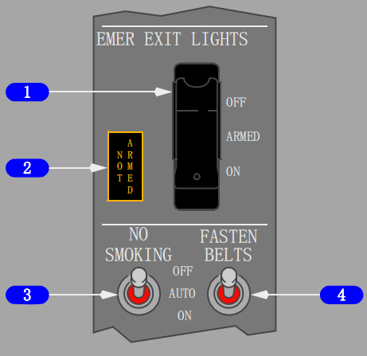
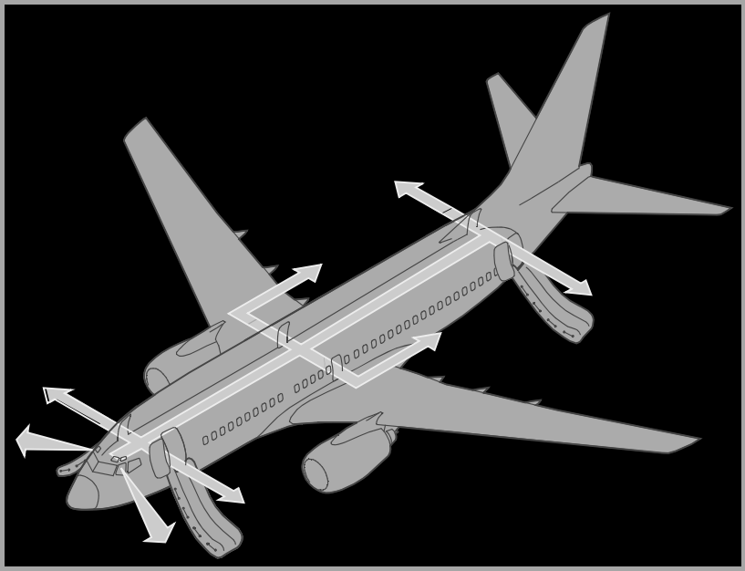

内部相关链接:
飞机舱门,

1 紧急出口灯（EMER EXIT LIGHTS）电门
OFF（关） – 飞机电源失效或关闭时，防止应急灯光系统工作。
ARMED（预位） – （带护盖位置）如果输到飞机1号直流汇流条的电源失效或交流电源关闭时，所有应急灯自动点亮。
ON（开） – 所有应急灯亮。
2 紧急出口灯未预位（EMER EXIT LIGHTS NOT ARMED）指示灯
亮（琥珀色） – 紧急出口灯（EMER EXIT LIGHTS）电门不在预位（ARMED） 位置。
3 禁止吸烟（NO SMOKING）电门
OFF（关） – 禁止吸烟信号灯熄灭。
AUTO（自动） – 根据飞机构型不同，禁止吸烟信号灯自动亮或熄灭。(逻辑下详)
ON（开） – 禁止吸烟信号灯亮。
4 系好安全带（FASTEN BELTS）电门
OFF（关） – 系好安全带（FASTEN SEAT BELTS），返回座位（RETURN TO SEAT） 信号灯熄灭。
AUTO（自动） – 根据飞机构型，系好安全带（FASTEN SEAT BELTS）和返回座位（RETURN TO SEAT）信号灯自动亮或熄灭(逻辑下详) 。
ON（开） – 系好安全带（FASTEN SEAT BELTS）和返回座位（RETURN TO SEAT）信号灯亮。
客舱信号灯
客舱信号灯是通过前顶部面板上的一个电门来控制的，当选择在自动方式时，信号灯按起落架和襟翼的位置来自动控制。
系好安全带（FASTEN BELTS）和返回座位（RETURN TO SEAT）信号灯：
• 襟翼或起落架伸出时亮
• 襟翼和起落架收起时熄灭。
禁止吸烟（NO SMOKING）信号灯：
• 起落架放出时燃亮
• 起落架收上时熄灭。
可以将相应电门分别置于“ON”或“OFF”来人工控制系好安全带（FASTEN BELTS）和返回座位（RETURN TO SEAT）信号灯。
当客舱信号灯亮或熄灭时，一个低谐音通过 PA 系统发出。
应急灯光
出口灯位于客舱各处，用来指示经批准的紧急出口路线。通过顶板上的一个电门控制该系统。电门有三个位置，即 OFF、 ARMED 和 ON，并且被保护在 ARMED 位置，电门在 ARMED 位置时，紧急出口灯正常情况下熄灭。如果1号直流（DC）汇流条的电源失效或交流电源已被关闭，紧急出口灯自动亮。
紧急出口灯也可通过后乘务员面板上的一个电门来接通。抬起防护盖并将电门按压到ON位，超控驾驶舱控制并且启动紧急出口灯。当自动控制发生故障时可使用这块面板进行控制。
驾驶舱后部的圆顶灯包含一个由紧急照明系统供电，供驾驶舱撤离使用的单独的灯光。
内部应急灯光(根据选型略有不同)
内部紧急出口灯位于：
• 在行李舱内侧拐角的低处，以照明通道
• 在登机/勤务和翼上紧急出口门上方，指示门的出口
• 舱顶，以定位出口并提供此范围内的一般照明。
自动照明出口定位信号灯设置在客舱的前、中和后部。
光感地板通道标记系统沿客舱通道安装。光感物质一旦被光激活，则发亮并提供出口通道的引导。在出口处，由电气操作的灯光和标记提供了出口标识。
光感带需正确感光，下表包含了感光信息，并且可用于确定光感带的发光时间。感光时，客舱顶灯和壁灯需全部点亮并在最亮位，并且光感带不能被履盖或阻隔。
紧急撤离路线
可通过四个登机口/勤务门和两个翼上撤离口完成紧急撤离。驾驶舱机组人员可通过两个滑动驾驶舱侧窗撤离。

驾驶舱侧窗紧急出口
如果必须使用驾驶舱的两个 2 号窗口作为紧急出口时，需要采用下述步骤：
• 打开窗
• 打开撤离绳储存箱（窗上部后方）
• 拉动撤离绳以确保牢固连接
• 将绳索抛出窗外
• 坐在窗框上将上身探出
• 按下图所表示的方法离机。
撤离滑梯快速分离手柄
此滑梯还没有被认可作为水上着陆的应急设备之一。在水上环境中，当展开时，滑梯可能没有适当地充好气。如果意识到展开的滑梯有可能阻碍出口时，在滑梯上部有一个脱离手柄。这个手柄由护盖保护并设置有标牌。
拉动快速分离手柄就可将撤离滑梯从飞机上脱离出来。一旦从门槛上分离出来，此滑梯就由短绳束缚在门槛上。充好气的滑梯会浮在水面，作为旅客在水中的飘浮工具。沿滑梯边缘安装了把手。
CAUTION: 确保绳子牢固地系紧在飞机上。
紧急撤离绳
紧急撤离绳装在每个紧急出口门框上，撤离门必须打开才能露出撤离绳，绳的一端与门框连接，剩下的部分储存在一个管子里延伸到座舱顶部，使用时，把绳从储放处拉出并连接到机翼表面顶部一个环中。紧急撤离绳在紧急水上迫降时可用作把手以供旅客从机翼上走出登上救生筏。
紧急出口门(按选型略有不同)
四个Ⅲ类紧急出口位于客舱机翼上方，这些是座舱盖式门，由机械锁和飞机座舱压力使门保持在位。
此门可以通过门上部的弹簧式手柄从飞机内外打开。设计了一个 28 伏直流电飞行锁定系统，以确保在起飞、巡航和着陆时飞行锁自动锁定而在地面松锁，紧急情况下可以开门。飞行锁锁定和松锁的指令是根据发动机转速，推力手柄位置，空/地方式 状态和门的开/关状态而定。如果飞行锁已经失效不能锁定或探测到故障时，PSEU灯，顶部（OVERHEAD）信号牌灯和主警戒灯（MASTER CAUTION）亮。这些指示在从起飞到飞机在地面方式后30秒之间被抑制。
翼上紧急出口在以下情况下锁住：
• 四扇登机/勤务门中的三扇关闭，并且
• 任何一个发动机在运转，并且
• 飞机空/地逻辑指示飞机在空中或者两个推力手柄都已前推。
当不满足上述任意一个条件，或无 DC 电源时，翼上紧急出口松锁。
当一个紧急出口门没有完全关好和锁定或飞行锁没有接通时，左翼上(LEFT OVERWING)和/或右翼上（RIGHT OVERWING）警告灯，舱门信号牌（DOORS） 和主警戒（MASIER AUTION）灯亮，起飞和飞行过程中均如此。如果飞行锁已经失效不能锁定或探测到故障时，PSEU 灯，顶部（OVERHEAD）信号牌灯和主警戒灯（MASTER CAUTION）亮。这些指示在从起飞到飞机在地面方式后30秒之间被抑制。当门闩上锁好并且飞行锁工作正常时，上述这些灯熄灭。